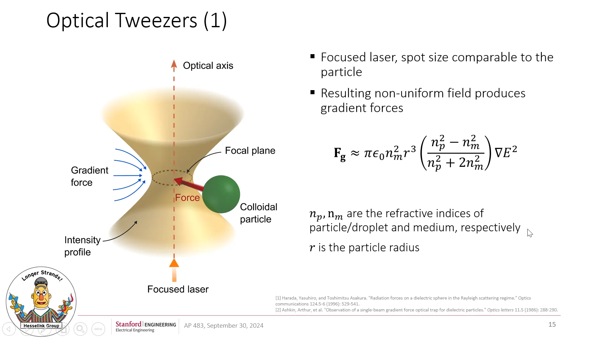
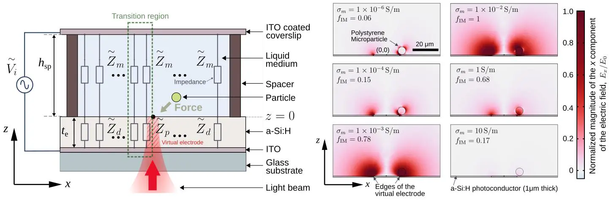
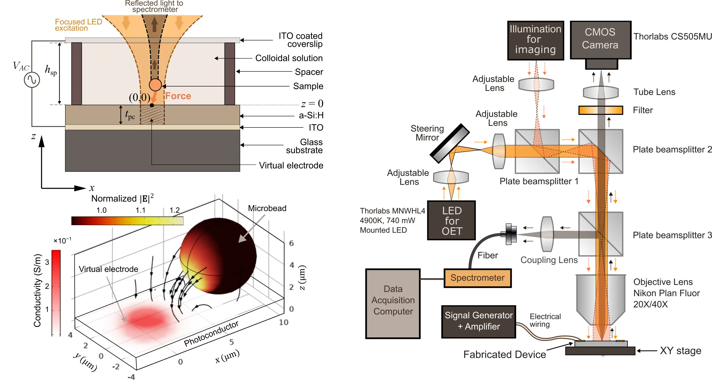

Hi there! Welcome to my website. I am a post-doctoral scholar at Stanford University. I received my PhD in Electrical Engineering from Stanford University in 2020. I obtained my
BS and MS degrees in Electrical & Electronic Engineering (EEE) from
Bangladesh University of Engineering and Technology (BUET)
in 2009 and 2011 respectively. I was a teaching faculty at the
Department of EEE of the same university from 2010 to 2014. My research interests include
nanophotonics, computational electromagnetics, optics, lab-on-a-chip devices, antenna design, and numerical optimization.
I am currently working in the Hesselink Research Group under the supervision of Prof. Lambertus Hesselink . My current research topics include near-field optical trapping using plasmonic structures, dielectrophoretic trapping and manipulation, optoelectronic tweezers, and developing platforms for Lab-on-a-chip (LOC) applications. Our latest work involves integrating a particle/micro-droplet manipulation platform in a microfluidic environment for implementing biochemical reactions in picoliter volumes.
I am currently working in the Hesselink Research Group under the supervision of Prof. Lambertus Hesselink . My current research topics include near-field optical trapping using plasmonic structures, dielectrophoretic trapping and manipulation, optoelectronic tweezers, and developing platforms for Lab-on-a-chip (LOC) applications. Our latest work involves integrating a particle/micro-droplet manipulation platform in a microfluidic environment for implementing biochemical reactions in picoliter volumes.
Highlights:
Sept. 30, 2024:
Talk at AP483: Optics and Electronic Seminar

July, 2024:
Impedance matching paper published in APL.

Feb., 2024:
Spectral tweezers paper published in APL.

June, 2019:
Received Centennial TA award.